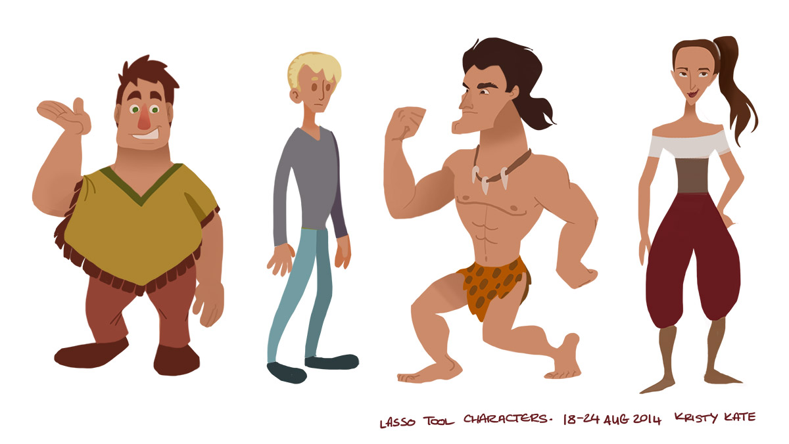
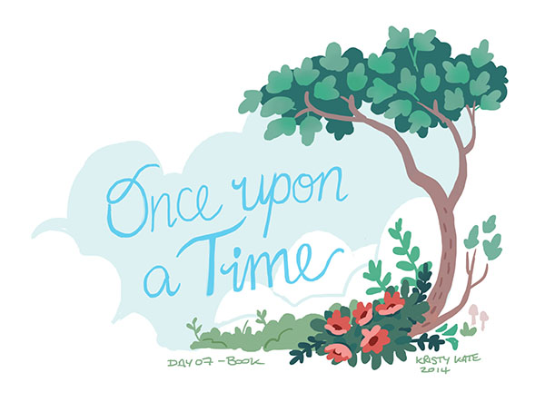
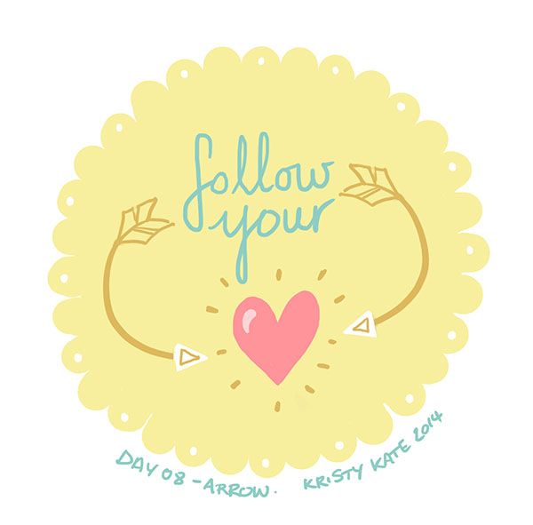
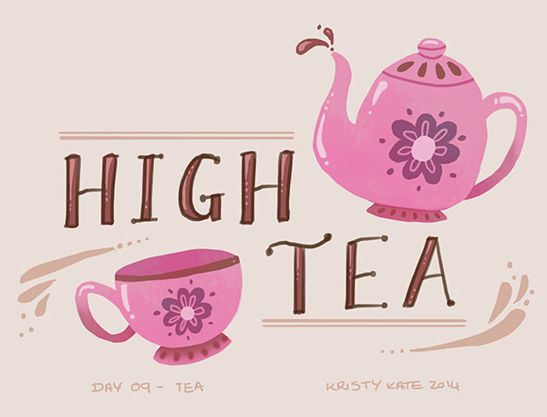
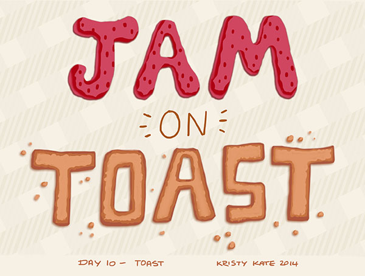
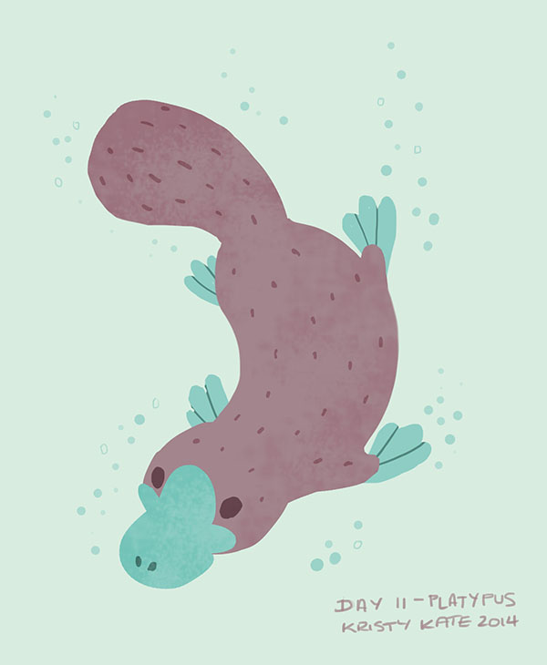
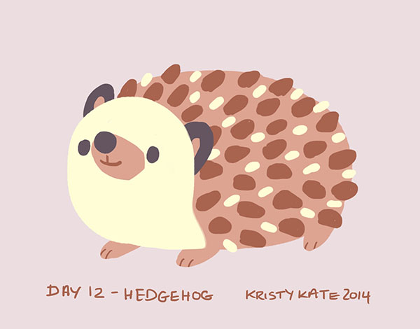
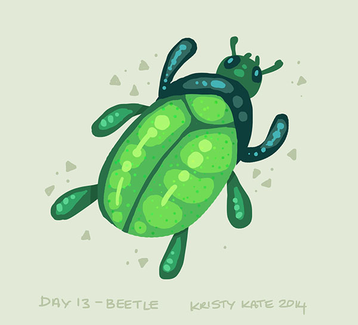
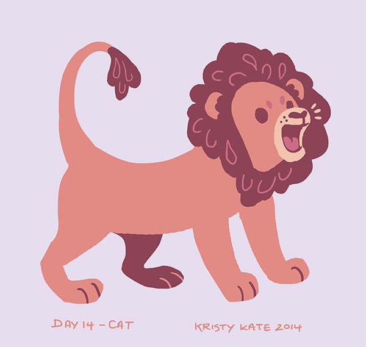

Week 22 Studies
August 18th - 24th
Hi all!
Prepare for a big #SpoonChallenge update today, but first, a couple of PS lasso tool characters:

Study (or should I say sketchbook?) time has been limited lately, so I concentrated on building up these character "sketches" over a couple of days. Mister Muscle Man didn't have arms for most of the week!
My remaining time went into catching up on Spoonflower's #SpoonChallenge sketches.
I blame falling behind on procrastinating over hand-drawn type. You see, part of the challenge for Week 2 (Days 6 - 10) was to incorporate type using the daily prompt as inspiration. Hand-drawn type is not my forte - especially when drawn straight on the computer.
I was definitely relieved to return to sketching animals (yay!) on Day 11.
Onto the sketches:
Day 7 - Book:

Day 8 - Arrow:

Day 9 - Tea:

Day 10 - Toast:
I started to dislike hand-drawn type a little less while drawing "JAM". Might be worth experimenting with more in the future, after I nail all those anatomy and character studies on my to-do list!

(And in hindsight, I should have chosen a different colour for the background. Ew.)
Day 11 - Platypus:

Day 12 - Hedgehog: (My favourite sketch so far!)

Day 13 - Beetle:

Day 14 - Cat:

Day 15 - Fish:

So that brings me up to date with #SpoonChallenge again - it's been really fun playing with colour and shapes and drawing from my imagination. Just one more week (I think?) of #SpoonChallenge to go and then it's back to incorporating anatomy study in my spare time.
Until then, all the best!
x Kristy Kate
+ + +
Have any thoughts on my sketches? Join me on my creative journey and share your own by leaving a comment (critique welcome) or connecting via Twitter or Facebook.